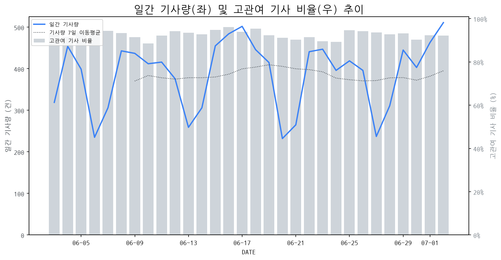

1
시장 활동 지표
기사량 추세 & 이상 징후 탐지
시장의 '전체 기사량'이 평소보다 비정상적으로 급증했는지(Spike)를 차트로 확인하고, LLM이 분석한 급등의 핵심 원인을 파악할 수 있음

고관여 기사란? 산업 연관 키워드로 수집된 기사들 중 디스플레이 키워드에 가중치를 반영하여 도출된 관련성 높은 기사
수집된 기사 수 (2026-07-02)
511
+22% WoW
기사량 변동 수준 (7일 이동평균 대비)
±6.7% 이하
2
오늘의 키워드
급격한 관심 ↑, 주목해야 할 키워드
1
디스플레이
+3.7σ
ETRI의 QD-OLED 직결 기술 개발 소식이 차세대 디스플레이 기술 발전에 대한 기대로 급증을 견인했습니다.
Related Metrics
금일 언급량: 26, 전일 대비: +12
Interpretation
신기술 개발 경쟁 가속화
Next Step
'디스플레이' 관련 상세 기사 및 경쟁사 반응 모니터링
2
etri
+3.6σ
ETRI가 잉크젯 공정 기반 차세대 QD-OLED 단일 기판 집적 기술을 개발하며 주목받고 있습니다.
Related Metrics
금일 언급량: 9, 전일 대비: +9
Interpretation
차세대 기술 선도 기대
Next Step
'etri' 관련 상세 기사 및 경쟁사 반응 모니터링
3
oled
+3.4σ
ETRI의 잉크젯 공정 기반 QD-OLED 단일 기판 집적 기술 개발 소식이 급증의 핵심 원인입니다.
Related Metrics
금일 언급량: 20, 전일 대비: +16
Interpretation
OLED 제조사, 기술 혁신 기회.
Next Step
핵심 토픽 'OLED_Topic' 관련 신호입니다. 3번 섹션(키워드 감성분석)에서 해당 토픽의 감성 변동을 교차 확인하세요.
4
sk하이닉스
+2.0σ
SK하이닉스의 충청권 대규모 투자 발표로 AI 혁신 중심지 육성 기대감이 고조되었습니다.
Related Metrics
금일 언급량: 9, 전일 대비: +8
Interpretation
반도체 투자 확대, 디스플레이 수요 증가 신호
Next Step
'sk하이닉스' 관련 상세 기사 및 경쟁사 반응 모니터링
3
실시간 Risk 키워드
경계해야 할 시그널 탐지
특정 토픽의 부정 감성 점수가 급등할 때 이를 즉시 탐지하고, "근거 기사" 링크를 통해 리스크의 실체를 빠르게 파악할 수 있음
키워드 분석 결과, 오늘은 걱정할 만한 하락 신호가 없습니다. (부정 언급량 변화: +1.5σ 이내)
4
주요 이벤트 모니터링
실시간 산업 동향 파악을 위한 주요 활동
최근 발생한 주요 기업들의 신제품 출시, 투자 등 주요 이벤트를 제공하여 매일 경쟁사 동향을 확인할 수 있음
AI 기술 발전이 대화면 디스플레이 시장 성장을 견인하고 있으며, 삼성전자가 이를 바탕으로 대화면 생태계를 선도하고 있다.
Impact
AI 기반의 혁신적인 대화면 경험이 소비자 수요를 증대시키며 관련 시장의 파이를 키울 것으로 예상된다.
Next Step
AI와의 시너지를 강화하는 혁신적인 대화면 디스플레이 기술 개발 및 솔루션 확보에 집중해야 한다.
ASUS ProArt PZ14 제품이 독특한 구성 요소를 갖추면서도 뛰어난 기본기를 보여주는 리뷰가 발표되었다. 이 제품은 전문가용 디스플레이 시장에서 새로운 가능성을 제시하고 있다.
Impact
ASUS ProArt PZ14 리뷰는 경쟁사들에게 독창적인 제품 설계와 성능 균형을 갖춘 전문가용 디스플레이의 중요성을 재확인시키며, 관련 시장의 혁신 경쟁을 촉진할 수 있다.
Next Step
경쟁사들은 ASUS ProArt PZ14와 같은 제품의 성공 요인을 분석하여, 자사의 전문가용 디스플레이 라인업에 독창적인 기능이나 차별화된 성능 요소를 통합하는 방안을 검토해야 한다.
애플이 반도체 부족난 속에서도 폴더블폰을 포함한 신형 아이폰 5종을 출시하며 라인업을 확장했습니다. 이는 공급망 이슈에도 불구하고 신제품 출시를 통해 시장 점유율을 확대하려는 전략으로 풀이됩니다.
Impact
이번 애플의 신제품 출시는 디스플레이 시장에서 폴더블 패널 수요 증가 및 기술 혁신을 촉진할 것으로 예상되며, 경쟁사들의 기술 개발 및 생산 능력 강화 압박으로 이어질 수 있습니다.
Next Step
디스플레이 제조 기업은 애플의 신규 아이폰 모델에 탑재될 폴더블 디스플레이의 안정적인 공급 능력 확보와 함께, 향후 폴더블 기술의 발전 방향을 예측하고 선제적인 연구 개발 및 생산 설비 투자를 고려해야 합니다.
글로벌 반도체 기업들이 호황을 맞이하며 기록적인 영업이익을 달성하고 있습니다. 이는 반도체 수요 증가와 공급망 이슈 등이 복합적으로 작용한 결과입니다.
Impact
반도체 업황 호조는 디스플레이 패널 제조에 필수적인 반도체 부품 수급 안정화 및 가격 협상력 강화에 긍정적인 영향을 줄 수 있습니다.
Next Step
디스플레이 제조 기업은 반도체 공급망을 더욱 긴밀히 관리하고, 장기 공급 계약 확보를 통해 원자재 가격 변동 리스크를 최소화해야 합니다.